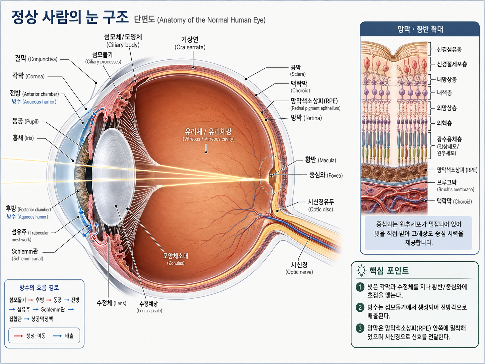

정상 사람의 눈 구조 · Interactive Anatomy
원본 도식을 그대로 사용하고, 그 위에 클릭 영역과 선택 강조 레이어를 올린 인터랙티브 자료입니다.
FINAL v5 · 2026-08-11
전체
전안부
포도막
후안부
망막 · 황반
시신경
빛 경로 ON
초기화
눈의 구조 단면도
구조를 클릭하면 다른 부분이 흐려지고 선택 부위가 강조됩니다.

모양체소대
Zonules · 수정체 적도부 연결
전안부
포도막
후안부
망막·황반
시신경